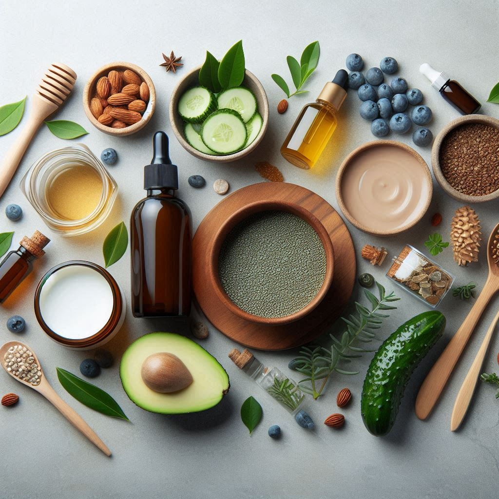

5 Must-Have Wellness Products for a Healthier You! 🌱💪
When it comes to improving your overall wellness, having the right products can make a world of difference. From staying hydrated to boosting your energy and keeping your mind sharp, wellness products are here to support you in leading a healthier life. Here are five must-have wellness products that you should consider adding to your daily routine:
1. Hydration Is Key: Water Bottle with Time Marker 🕒💧
Staying hydrated is one of the simplest ways to improve your health, yet it’s often overlooked. A water bottle with a time marker can help you track your water intake throughout the day. It serves as a gentle reminder to drink water regularly, ensuring you stay hydrated and energized.
- 💧 Why it's a must-have:
- a. Encourages consistent hydration
- b. Helps maintain energy levels
- c. Supports healthy skin
- 👉 Top Product: AquaBottle with Time Markers

2. Mindfulness and Relaxation: Meditation Cushion 🧘♀️✨
In today's fast-paced world, stress is inevitable, but how you manage it is crucial for your well-being. A meditation cushion can make your mindfulness practice more comfortable and help you stay grounded during your sessions.
- 🧘♀️ Why it's a must-have:
- a.Reduces stress and anxiety
- b. Promotes mental clarity and relaxation
- c. Provides comfort for long meditation sessions
- 👉 Top Product: Gaiam Meditation Cushion
3. Boost Your Immunity: Vitamin C Supplements 🍊💊
Supporting your immune system with the right vitamins is essential, especially during seasonal changes. Vitamin C is well-known for its immune-boosting properties and can also improve your skin health.
- 🍊 Why it's a must-have:
- a. Strengthens immune defenses
- b. Helps with skin health
- c. Reduces the duration of colds
- 👉 Top Product: Nature's Bounty Vitamin C
4. Energize Your Day: Fitness Tracker ⏱️📱
A fitness tracker is more than just a stylish accessory. It tracks your physical activity, sleep, and heart rate, helping you stay motivated and on track to achieve your health goals. Whether you’re trying to improve your fitness level or monitor your daily activity, a fitness tracker is a game-changer.
- ⏱️ Why it's a must-have:
- a.Tracks steps, sleep, and heart rate
- b.Motivates you to stay active
- c.Helps you set and track wellness goals
- 👉 Top Product: Fitbit Charge 5
5. Detox Your Body: Herbal Tea Collection 🍵🌿
Detoxifying your body is essential for maintaining a healthy lifestyle, and herbal teas are a great way to support this process. Teas like green tea, peppermint, and chamomile help with digestion, reduce bloating, and calm your mind.
- 🍵 Why it's a must-have:
- a. Supports digestion and detoxification
- b. Reduces stress and anxiety
- c. Helps with relaxation before bed
- 👉 Top Product: Traditional Medicinals Organic Tea